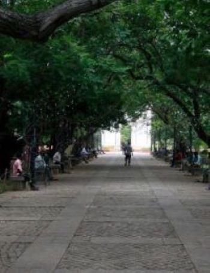

Bharathi Park
Feel the slow pace of Pondicherry's life as you stroll in the Bharati Park, situated in the heart of Puducherry. The park with its shady trees and soothing green grass is the ideal spot to beat the heat.
Read More